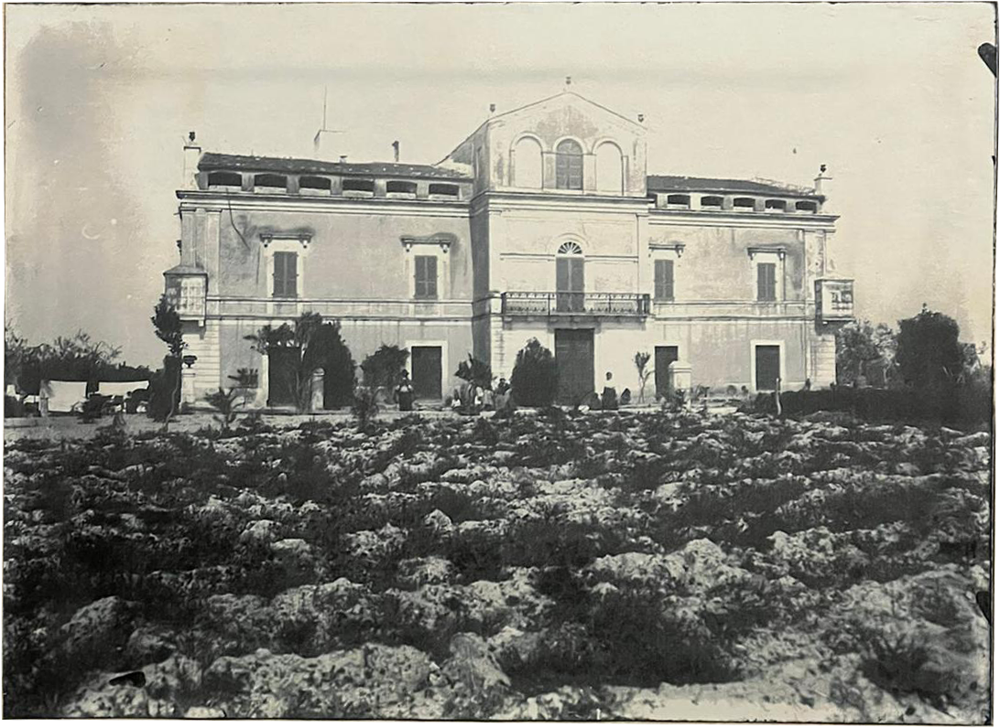
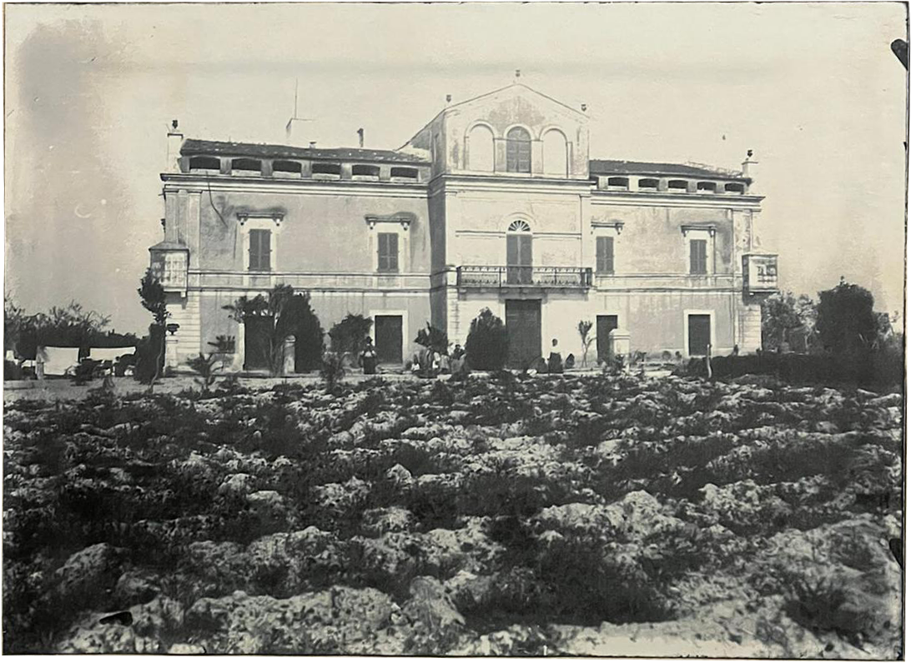

(1) Villa Fenicia nell'800. in the XIX century.

StoriaHistory
La storia di Villa Fenicia è da sempre intrecciata a quella della famiglia da cui prende il nome.
I primi insediamenti della zona sono di epoca romana, ma nel 1600 viene costruita la masseria fortificata Gigliano, la cui struttura è ancora oggi il cuore della Villa: con la sua produzione agricola, era un’importante area rurale, assegnata all’architetto Giulio Cesare Fenicia, nobile di Ravello per il governo di Ruvo di Puglia.
È nel 1870 che la masseria Gigliano viene trasformata dall’architetto De Judicibus, incaricato da Michele Fenicia, nell’elegante struttura odierna, caratterizzata in modo unico dai colori della costiera amalfitana - come le tinte gialle e il rosso pompeiano della facciata – uniti al vivo della chianca di Trani. Oggi, grazie all’importante opera di restauro di Antonio Fenicia, rappresenta uno delle più suggestive architetture della zona. The history of Villa Fenicia has always been intertwined with that of the family from which it takes its name.
The first settlements of the area are from Roman times. Only in the 1600 the fortified farm Gigliano was built, which structure is still the heart of the Villa. With its agricultural production, it was an important rural area, assigned to the architect Giulio Cesare Fenicia, noble of Ravello, for the government of Ruvo di Puglia.
In 1870 the farm Gigliano is transformed by the architect De Judicibus, commissioned by Michele Fenicia, in today’s elegant structure, uniquely characterized by the colours of the Amalfi coast - as the yellow and the Pompeian red of the facade - joined to the the Trani’s chianca stone. Today, thanks to the important restoration work by Antonio Fenicia, it represents one of the most suggestive architectures of the region.
I primi insediamenti della zona sono di epoca romana, ma nel 1600 viene costruita la masseria fortificata Gigliano, la cui struttura è ancora oggi il cuore della Villa: con la sua produzione agricola, era un’importante area rurale, assegnata all’architetto Giulio Cesare Fenicia, nobile di Ravello per il governo di Ruvo di Puglia.
È nel 1870 che la masseria Gigliano viene trasformata dall’architetto De Judicibus, incaricato da Michele Fenicia, nell’elegante struttura odierna, caratterizzata in modo unico dai colori della costiera amalfitana - come le tinte gialle e il rosso pompeiano della facciata – uniti al vivo della chianca di Trani. Oggi, grazie all’importante opera di restauro di Antonio Fenicia, rappresenta uno delle più suggestive architetture della zona. The history of Villa Fenicia has always been intertwined with that of the family from which it takes its name.
The first settlements of the area are from Roman times. Only in the 1600 the fortified farm Gigliano was built, which structure is still the heart of the Villa. With its agricultural production, it was an important rural area, assigned to the architect Giulio Cesare Fenicia, noble of Ravello, for the government of Ruvo di Puglia.
In 1870 the farm Gigliano is transformed by the architect De Judicibus, commissioned by Michele Fenicia, in today’s elegant structure, uniquely characterized by the colours of the Amalfi coast - as the yellow and the Pompeian red of the facade - joined to the the Trani’s chianca stone. Today, thanks to the important restoration work by Antonio Fenicia, it represents one of the most suggestive architectures of the region.
Iniziato nel 1970 e durato per oltre vent’anni sotto l’appassionata guida di Antonio Fenicia, il restauro ha ridato alla Villa tutta la sua vitalità. I mobili originali sono stati recuperati insieme ai decori, mantenendo intatti i tanti affreschi delle sale. Per renderla un luogo accogliente sono stati aggiunti tutti i comfort necessari, fra cui il Giardino d’Inverno e la moderna cucina che oggi accoglie i cuochi Francesco e Vincenzo Montaruli. L’opera di restauro ha preservato i beni più antichi, rendendola una vera e propria casa, “luogo del ritorno” per i tanti affezionati ospiti.
Started in 1970 and lasted for over twenty years under the passionate guidance of Antonio Fenicia, the restoration has given back to the Villa all its vitality. The original furniture has been restored along with the decorations, keeping intact the many frescoes of the rooms. To make it a welcoming place, it has been added all the necessary comforts, including the Winter Garden and the modern kitchen that today welcomes the cooks Francesco and Vincenzo Montaruli. The restoration work has preserved the oldest beauties while making it a real home, "the place to go back to" for many loyal guests.